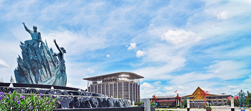
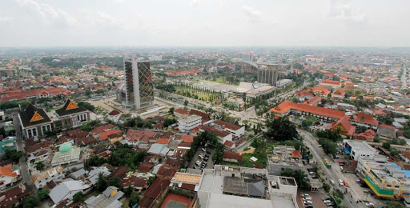
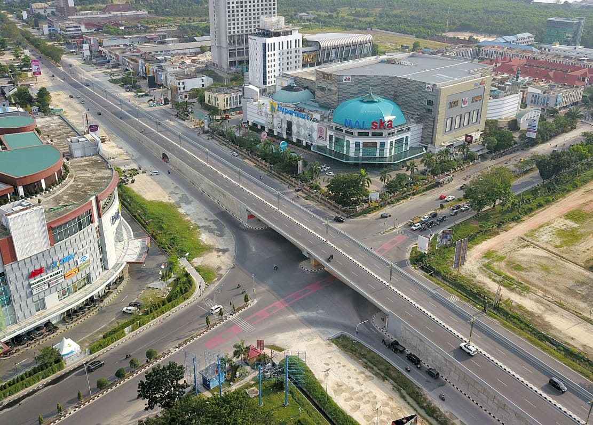

Sejarah

Perkembangan kota ini pada awalnya tidak terlepas dari fungsi Sungai Siak sebagai sarana transportasi dalam
mendistribusikan hasil bumi dari pedalaman dan dataran tinggi Minangkabau ke wilayah pesisir Selat Malaka.
Pada abad ke-18, wilayah Senapelan di tepi Sungai Siak, menjadi pasar (pekan) bagi para pedagang Minangkabau.
Seiring dengan berjalannya waktu, daerah ini berkembang menjadi tempat permukiman yang ramai.
Sultan Siak ke-4 Sultan Alamuddin Syah memindahkan pusat kekuasaan Siak dari Mempura ke Senapelan pada tahun 1762.
Pada tanggal 23 Juni 1784, berdasarkan musyawarah "Dewan Menteri" dari Kesultanan Siak,
yang terdiri dari datuk empat suku (Pesisir, Limapuluh, Tanah Datar, dan Kampar), kawasan ini dinamai dengan Pekanbaru,
dan dikemudian hari diperingati sebagai hari jadi kota ini
Selepas kemerdekaan Indonesia, berdasarkan Ketetapan Gubernur Sumatra di Medan tanggal 17 Mei 1946 Nomor 103,
Pekanbaru dijadikan daerah otonom yang disebut Haminte atau Kotapraja.Kemudian pada tanggal 19 Maret 1956,
berdasarkan Undang-undang Nomor 8 Tahun 1956 Republik Indonesia, Pekanbaru (Pakanbaru) menjadi daerah otonom kota kecil
dalam lingkungan Provinsi Sumatra Tengah. Selanjutnya sejak tanggal 9 Agustus 1957 berdasarkan Undang-undang Darurat
Nomor 19 Tahun 1957 Republik Indonesia, Pekanbaru masuk ke dalam wilayah Provinsi Riau yang baru terbentuk.
Kota Pekanbaru resmi menjadi ibu kota Provinsi Riau pada tanggal 20 Januari 1959 berdasarkan Kepmendagri nomor
Desember 52/I/44-25 sebelumnya yang menjadi ibu kota adalah Tanjungpinang
(kini menjadi ibu kota Provinsi Kepulauan Riau).
Geografis

Secara geografis kota Pekanbaru memiliki posisi strategis berada pada jalur Lintas Timur Sumatra,
terhubung dengan beberapa kota seperti Medan, Padang dan Jambi,
dengan wilayah administratif, diapit oleh Kabupaten Siak pada bagian utara dan timur, sementara bagian barat dan selatan
oleh Kabupaten Kampar..
Kota ini dibelah oleh Sungai Siak yang mengalir dari barat ke timur dan berada pada ketinggian berkisar antara 5 - 50 meter
di atas permukaan laut. Kota ini termasuk beriklim tropis dengan suhu udara maksimum berkisar antara 34,1 °C hingga 35,6 °C
, dan suhu minimum antara 20,2 °C hingga 23,0 °C.
Sebelum tahun 1960 Pekanbaru hanyalah kota dengan luas 16 km² yang kemudian bertambah menjadi 62,96 km² dengan 2 kecamatan
yaitu kecamatan Senapelan dan kecamatan Limapuluh. Selanjutnya pada tahun 1965 menjadi 6 kecamatan, dan tahun 1987 menjadi
8 kecamatan dengan luas wilayah 446,50 km², setelah Pemerintah daerah Kampar menyetujui untuk menyerahkan sebagian dari
wilayahnya untuk keperluan perluasan wilayah Kota Pekanbaru, yang kemudian ditetapkan melalui Peraturan Pemerintah
Republik Indonesia Nomor 19 Tahun 1987. Kemudian pada tahun 2003 jumlah kecamatan pada kota ini dimekarkan menjadi
12 kecamatan.
Perekonomian

Saat ini Pekanbaru telah menjadi kota metropolitan, yaitu dengan nama Pekansikawan (Pekanbaru, Siak, Kampar, dan Pelalawan).
Perkembangan perekonomian Pekanbaru, sangat dipengaruhi oleh kehadiran perusahaan minyak, pabrik pulp dan kertas, serta
perkebunan kelapa sawit beserta pabrik pengolahannya. Kota Pekanbaru pada triwulan I 2010 mengalami peningkatan inflasi
sebesar 0,79%, dibandingkan dengan triwulan sebelumnya yang mencapai 0,30%. Berdasarkan kelompoknya, inflasi terjadi
hampir pada semua kelompok barang dan jasa kecuali kelompok sandang dan kelompok kesehatan yang pada triwulan laporan
tercatat mengalami deflasi masing-masing sebesar 0,88% dan 0,02%. Secara tahunan inflasi kota Pekanbaru pada bulan Maret
2010 tercatat sebesar 2,26%, terus mengalami peningkatan sejak awal tahun 2010 yaitu 2,07% pada bulan Januari 2010 dan
2,14% pada bulan Februari 2010.
Bisnis & Perdagangan
Posisi Sungai Siak sebagai jalur perdagangan Pekanbaru, telah memegang peranan penting dalam meningkatkan pertumbuhan
ekomoni kota ini. Penemuan cadangan minyak bumi pada tahun 1939 memberi andil besar bagi perkembangan dan migrasi penduduk
dari kawasan lain. Sektor perdagangan dan jasa saat ini menjadi andalan Kota Pekanbaru, yang terlihat dengan menjamurnya
pembangunan ruko pada jalan-jalan utama kota ini. Selain itu, muncul beberapa pusat perbelanjaan modern,
diantaranya: Plaza Senapelan, Plaza Citra, Plaza Sukaramai, Mal Pekanbaru, Mal SKA, Mal Ciputra Seraya,Lotte Mart,
Metropolitan Trade Center, The Central, Panam Square, Giant, Robinson, Transmart Pekanbaru dan Living World.
Walau di tengah perkembangan pusat perbelanjaan modern ini, pemerintah kota terus berusaha untuk tetap menjadikan
pasar tradisional yang ada dapat bertahan, di antaranya dengan melakukan peremajaan, memperbaiki infrastruktur dan
fasilitas pendukungnya. Beberapa pasar tradisional yang masih berdiri, antara lain Pasar Bawah, Pasar Raya Senapelan
(Pasar Kodim), Pasar Andil, Pasar Rumbai, Pasar Limapuluh dan Pasar Cik Puan.
Industri dan Pekerbunan
Sementara dalam pertumbuhan bidang industri di Kota Pekanbaru terus mengalami peningkatan dengan rata-rata pertumbuhan
pertahun sebesar 3,82 %, dengan kelompok industri terbesar pada sektor industri logam, mesin, elektronika dan aneka,
kemudian disusul industri pertanian dan kehutanan. Selain itu beberapa investasi yang ditanamkan di kota ini sebagian
besar digunakan untuk penambahan bahan baku, penambahan peralatan dan perluasan bangunan, sebagian kecil lainnya
digunakan untuk industri baru.